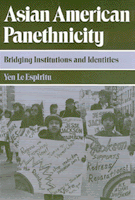

<body bgcolor="#FFFFFF" text="#000000" link="#0000FF" vlink="#CC0000" alink="#CC0000"><center><hr width="350" size="1" align="center" noshade>A case study of how cultural diversity among Asian Americans is subsumed for social and political advantage<hr width="350" size="1" align="center" noshade><p><a href="https://cdcshoppingcart.uchicago.edu/Cart/ChicagoBook.aspx?ISBN=9780877229551&&PRESS=temple" target="_top">Buy this book!</a> | <a href="https://cdcshoppingcart.uchicago.edu/Cart/Cart.aspx?PRESS=temple" target="_top">View Cart</a> | <a href="https://cdcshoppingcart.uchicago.edu/Cart/Cart.aspx?PRESS=temple" target="_top">Check Out</a></p><p></p></center><!--none//--><h1>Asian American Panethnicity</h1>
<H2>Bridging Institutions and Identities</H2>
<h3>Yen Le Espiritu</h3>
<P>cloth 0-87722-955-4 $56.50, Aug 92, <FONT COLOR=#990033>Out of Stock Unavailable</FONT>
<br>paper 1-56639-096-6 $29.95, Feb 93, <FONT COLOR=#990033>Available</FONT>
<br>Electronic Book 1-43990-556-8 $29.95 <FONT COLOR=#990033>Out of Stock Unavailable</FONT>
<BR> 238 pp
6x9
</P><h3 align="center"><P><font color="#996633">Outstanding Academic Title, <i>Choice</i>,
1994</font></P>
<P><font color="#996633">Outstanding Book Award, Association for Asian American Studies,
1994</font></P>
</H3>
<BLOCKQUOTE><I>"Original and stimulating.... [Espiritu's] study raises compelling questions about the existing literature on ethnicity and her findings open up new avenues for research and analysis."</I>
<br>&#151<b>Michael Omi</b>, University of California, Berkeley, co-author of <I>Racial Formation in the U.S. from the 1960s to the 1980s</I><I></I></BLOCKQUOTE>
<p>With different histories, cultures, languages, and identities, most Americans of Chinese, Japanese, Filipino, Korean, and Vietnamese origin are lumped together and viewed by other Americans simply as Asian Americans. Since the mid 1960s, however, these different Asian American groups have come together to promote and protect both their individual and their united interests. The first book to examine this particular subject, <I>Asian American Panethnicity</I> is a highly detailed case study of how, and with what success, diverse national-origin groups can come together as a new, enlarged panethnic group.
<p>Yen Le Espiritu explores the construction of large-scale affiliations, in which previously unrelated groups submerge their differences and assume a common identity. Making use of extensive interviews and statistical data, she examines how Asian panethnicity protects the rights and interests of all Asian American groups, including those, like the Vietnamese and Cambodians, which are less powerful and prominent than the Chinese and Japanese. By citing specific examples&#151educational discrimination, legal redress, anti-Asian violence, the development of Asian American Studies programs, social services, and affirmative action&#151the author demonstrates how Asian Americans came to understand that only by cooperating with each other would they succeed in fighting the racism they all faced.
<BR>&nbsp;<h2>Excerpt</h2><P>Excerpt available at <a href="http://www.temple.edu/tempress">www.temple.edu/tempress</a></p>
<BR>&nbsp;<h2>Contents</h2><P>
<p>Tables and Figures
<br>Preface
<br>1. Ethnicity and Panethnicity
<br>2. Coming Together: The Asian American Movement
<br>3. Electoral Politics
<br>4. The Politics of Social Service Funding
<br>5. Census Classification: The Politics of Ethnic Enumeration
<br>6. Reactive Solidarity: Anti-Asian Violence
<br>7. Pan-Asian American Ethnicity: Retrospect and Prospect
<br>Notes
<br>References
<br>Interviews
<br>Index
</P><BR>&nbsp;<H2>About the Author(s)</H2>
<P><b>Yen Le Espiritu</b> is Assistant Professor in the Department of Ethnic Studies at the University of California, San Diego, and is the author of <i><a href="1157_reg.html" target="_top">Filipino American Lives</a></i> (Temple).</P>
<BR><H2>Subject Categories</H2>
<p><A HREF="/tempress/asian_amer.html" TARGET="_top">Asian American Studies</a>
<BR><A HREF="/tempress/sociology.html" TARGET="_top">Sociology</a>
</p>
<BR><h2 class="inpageheading">In the series</H2>
<P><I><a href="http://www.temple.edu/tempress/asam_history.html" onMouseOver="window.status='Click for other books in this series!'; return true;" onMouseOut="window.status=''; return true;" target="_top">Asian American History and Culture</a></i>, edited by K. Scott Wong, Linda Trinh Võ, and Cathy Schlund-Vials.
</p><p>Founded by Sucheng Chan in 1991, the <I>Asian American History and Culture</I>, series has sponsored innovative scholarship that has redefined, expanded, and advanced the field of Asian American studies while strengthening its links to related areas of scholarly inquiry and engaged critique. Like the field from which it emerged, the series remains rooted in the social sciences and humanities, encompassing multiple regions, formations, communities, and identities. Extending the vision of founding editor Sucheng Chan and emeriti editor Michael Omi and David Palumbo-Liu, series editors K. Scott Wong, Linda Trinh Võ, and Cathy Schlund-Vials continue to develop a foundational collection that embodies a range of theoretical and methodological approaches to Asian American studies.</p>
<p align="center"><a href="https://cdcshoppingcart.uchicago.edu/Cart/ChicagoBook.aspx?ISBN=9780877229551&&PRESS=temple" target="_top">Buy this book!</a> | <a href="https://cdcshoppingcart.uchicago.edu/Cart/Cart.aspx?PRESS=temple" target="_top">View Cart</a> | <a href="https://cdcshoppingcart.uchicago.edu/Cart/Cart.aspx?PRESS=temple" target="_top">Check Out</a></p><p><font face="Arial" size="1"><a href="copyright.html" onMouseOver="window.status='Web Copyright Policy';return true;" onMouseOut="window.status=''" title="Web Copyright Policy">&copy;</a> 2015 <a href="http://www.temple.edu" target="new" onMouseOver="window.status='Link to Temple University home page';return true;" onMouseOut="window.status=''" title="Link to Temple University home page">Temple University</a>. All Rights Reserved. http://www.temple.edu/tempress/titles/898_reg.html</font></p>